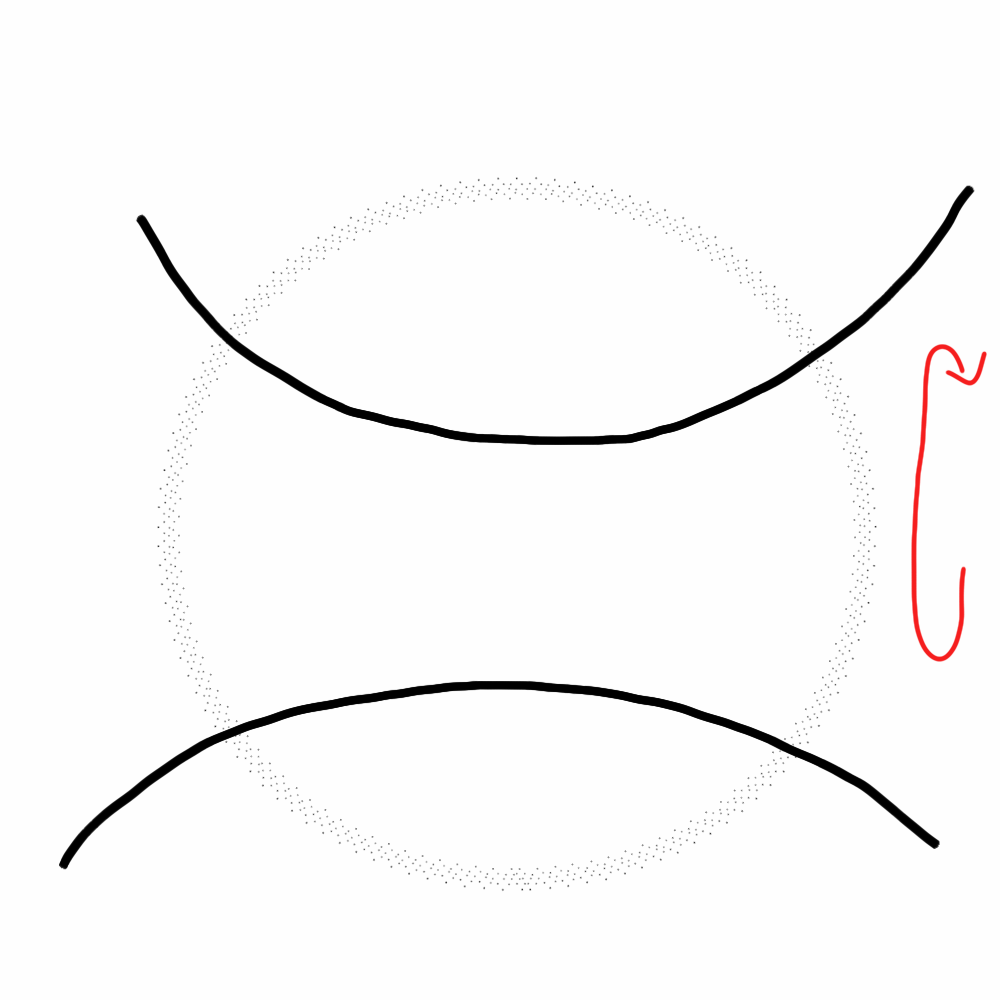
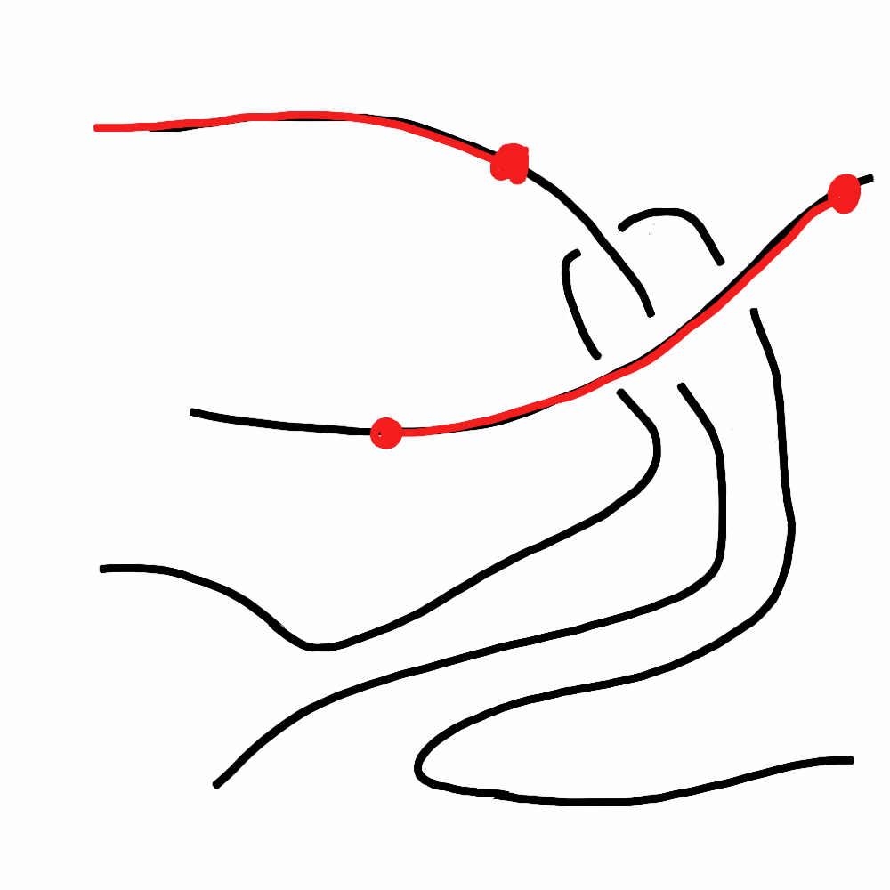

Bridge Numbers: A Knotty Journey
UNI Mathematics Colloquium
- TJ Hitchman
- Julie Kirkpatrick
- Tracy Wulfekuhle
April 27, 2016
What is a Knot?
The "trefoil" knot.
image credit: KnotInfo web site
Not a Knot

Another Simple Knot

How do we tell if two knot projections are the same?
Equivalence of knots is by "ambient isotopy."
A better way was discovered by Reidemeister in the 1930's.
Any isotopy between knots can be realized as a finite sequence of three types of small changes.
Those changes are now called Reidemeister Moves.
Reidemeister Moves of type I

Reidemeister Moves of type II
Reidemeister Moves of type III

An Example
Arguments are often pleasantly pictorial. These two knot projections represent the same knot.
Part one of the argument
Part two of the argument
The knots \(6_3\) and \(11a_{354}\)

image credit: KnotInfo web site
The Prime Knots up to Seven Crossings

image credit: Wikipedia
{kind=link}
Can we find a "best" projection?
The Bridge Number
An "overpass" is an arc of the knot which only has the overstrand in all of its crossings. A "maximal overpass" is an overpass that is not part of any larger overpass.
The Bridge Number

The Bridge Number
The bridge number of a knot is the minimum number of maximal overpasses, taken over all possible planar projection drawings of the knot.
Introduced and studied by Horst Schubert, a student of Seifert and an important figure in mid-1900's knot theory.
Example One

Bridge Number equal to \(2\).
Example One
Bridge Number equal to \(2\).
Example Two


Bridge Number equal to \(3\).
A Theorem
If a knot \(K\) has bridge number equal to \(1\), then \(K\) is the "unknot".
Another Theorem
A knot \(K\) has bridge number equal to \(2\) exactly when it can be realized as the closure of a "rational tangle."
Both due to Schubert, restated after Conway's work
A rational tangle
A rational tangle
A rational tangle
A rational tangle
This is the numerator closure of \(65/38\).
Another big result we know
If \(K\) is a Montesinos knot, then the bridge number of \(K\) is equal to the number of rational tangle pieces in the representation.
A recent result of Chad Musick (2012)
Of the 552 prime knots with 11 crossings, 91 are rational knots and hence have bridge number equal to 2, and 15 are Montesinos knots with 4 tangles and hence have bridge number equal to 4. The rest have bridge number equal to 3.
Big Questions
Can we understand and classify the knots with bridge number 3?
Big Questions
Can we find an algorithm for computing a minimal bridge representation of a knot from any planar projection diagram?
Big Questions
Can we compute the bridge numbers of (some of) the 2176 prime knots with 12 crossings?
Our Algorithm
Let K be a knot, with a given planar projection drawing K.
- Choose an orientation of the knot
- Choose an arc of the knot which has at least one overpass. This will be our first bridge.
- Label each of the crossings which is not part of this first bridge by integers in increasing order along the direction of travel.
The part that you repeat:
Running through the crossings that are not part of the current bridge set, in increasing order of label:
- [Drag] Look for a “drag the underpass” move which has no interference and do it. If there is a choice, use the option which drags the underpass along the direction of travel on K.
- [Simplify] Look for any resulting type I or type II Reidemeister moves which simplify the presentation and use them until none are left.
If the bit above in the loop cannot be done at all, take the crossing with the smallest remaining number and declare its overpassing arc as another bridge.
"Drag the Underpass"
"Drag the Underpass"
"Drag the Underpass"
"Drag the Underpass"
The example \(8_{10}\)
The example \(8_{10}\)
The example \(8_{10}\)
The example \(8_{10}\)
The example \(8_{10}\)
Our Results
| \(K\) | \(b(K)\) | || | \(K\) | \(b(K)\) | || | \(K\) | \(b(K)\) |
| \(12a_{0001}\) | 3, 4 | || | \(12a_{0008}\) | 3 | || | \(12a_{0015}\) | 3, 4 |
| \(12a_{0002}\) | 3, 4 | || | \(12a_{0009}\) | 3 | || | \(12a_{0016}\) | 3 |
| \(12a_{0003}\) | 3 | || | \(12a_{0010}\) | 3 | || | \(12a_{0017}\) | 3 |
| \(12a_{0004}\) | 3 | || | \(12a_{0011}\) | 3, 4 | || | \(12a_{0018}\) | 3 |
| \(12a_{0005}\) | 3 | || | \(12a_{0012}\) | 3 | || | \(12a_{0019}\) | 3 |
| \(12a_{0006}\) | 3, 4 | || | \(12a_{0013}\) | 3, 4 | || | \(12a_{0020}\) | 3 |
| \(12a_{0007}\) | 3, 4 | || | \(12a_{0014}\) | 3 | || | \(12a_{0021}\) | 3, 4 |